windows环境下搭建网站
IIS服务的安装
1.打开“控制面板” - “程序” - “启动或关闭Windows功能
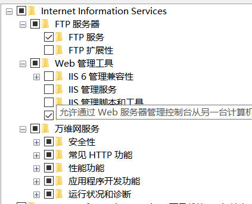
IIS配置
1.WIN + X - “计算机管理”
2.新建网站
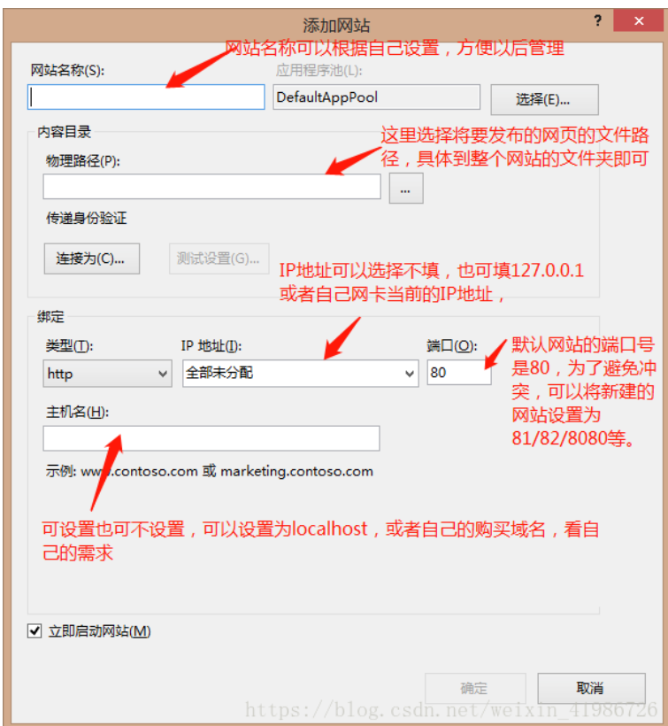
完成以上设置之后，尝试在自己的电脑上浏览（假设我以上端口号设置为81，即在浏览器输入localhost:81 或者127.0.0.1:81或者输入自己当前网卡的IP地址+端口号81）
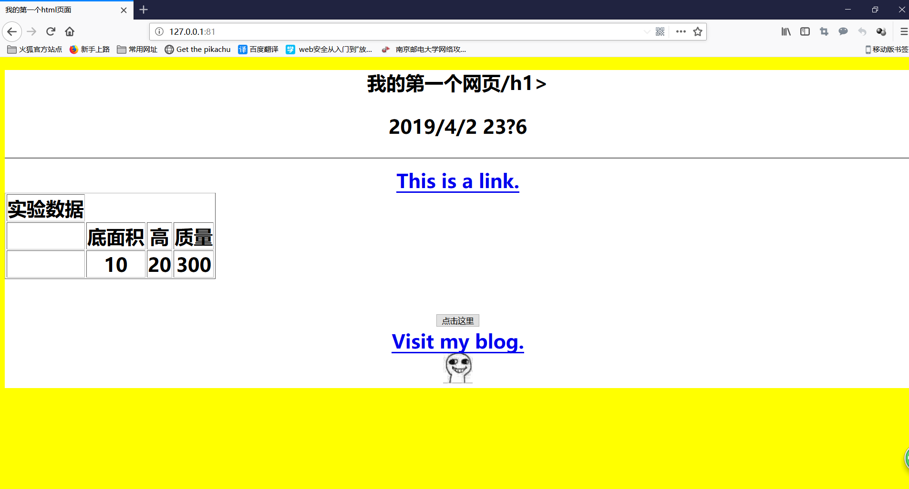
或者输入目前电脑的IP地址（局域网地址）
cmd - ipconfig:
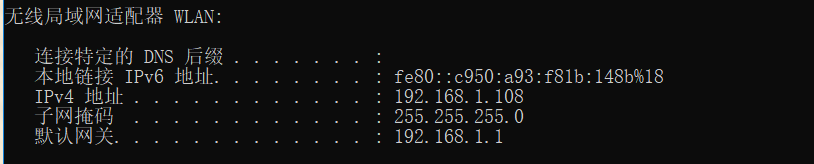
这样我们就在自己的Windows上搭建了一个网站
防火墙配置
目前我们电脑开启IIS服务，就相当于一台具有IIS服务的web服务器，我们要保证其他机器能够访问我们的网站，就必须考虑防火墙的问题。
防火墙和网络保护 - 高级设置
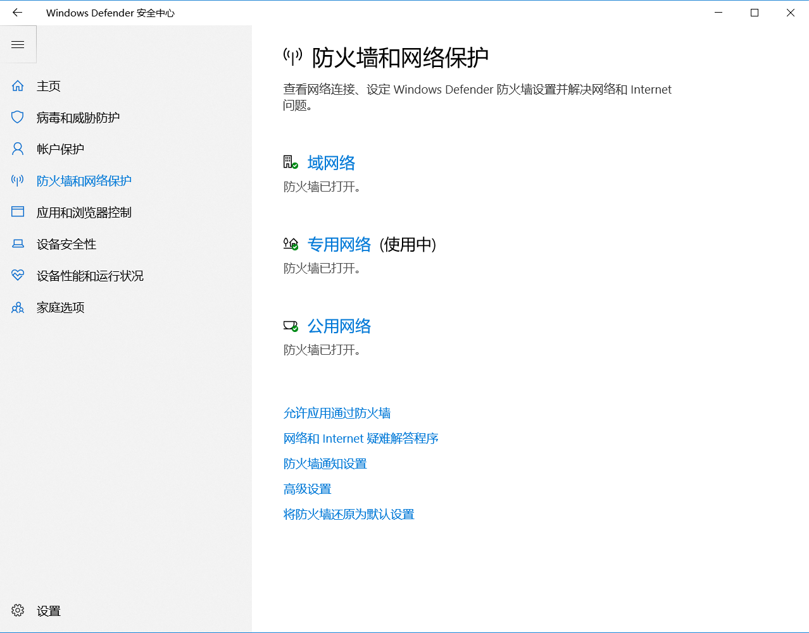
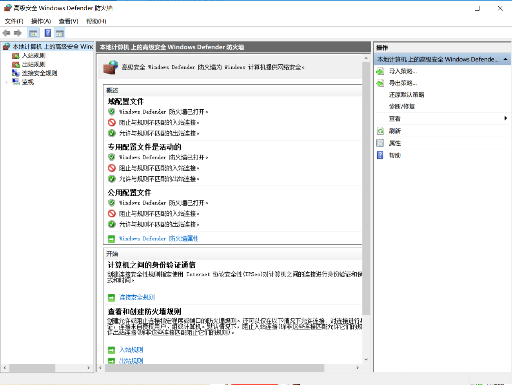
我们可以直接关闭防火墙，但是这是很不安全的措施
我们可以通过设置防火墙的出入站规则（ACL），对网站访问权限进行设置
入站规则：新建入站规则，选择对端口进行设置，我们可以设置为允许任何对于81端口的请求。
入站规则 - 新建规则 - 端口
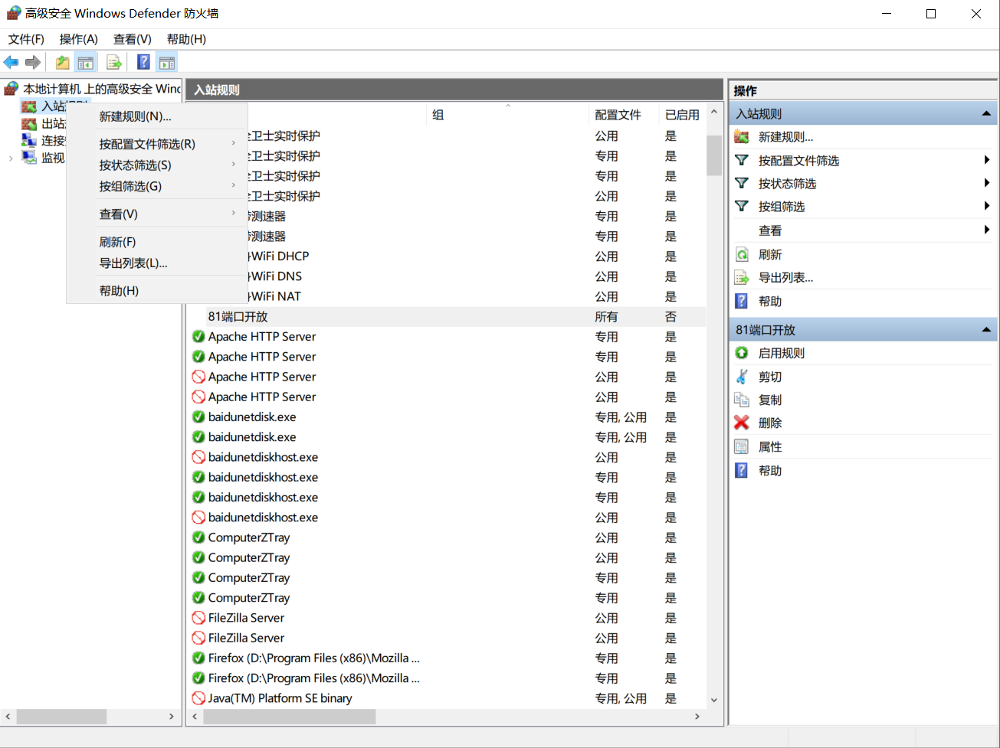
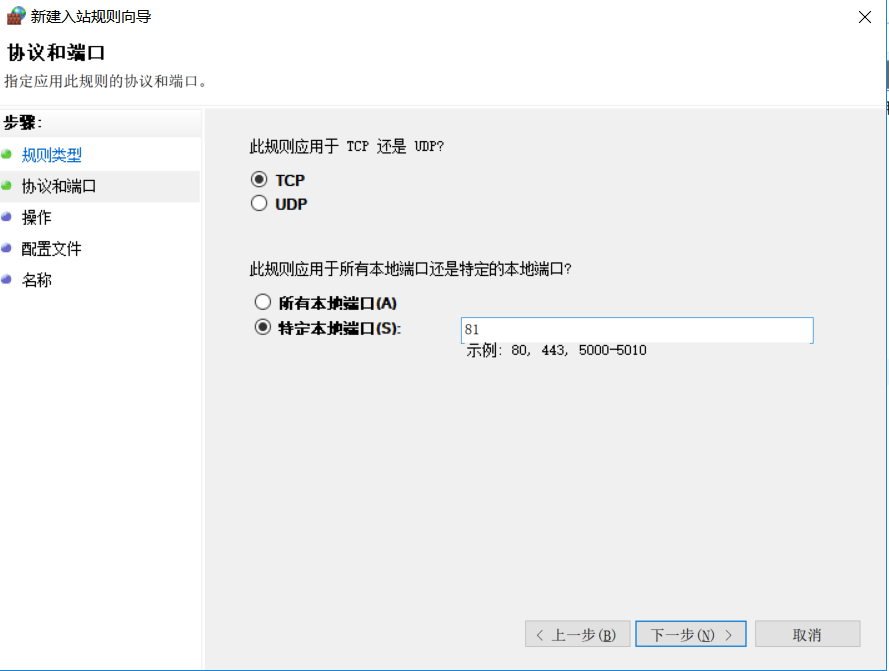
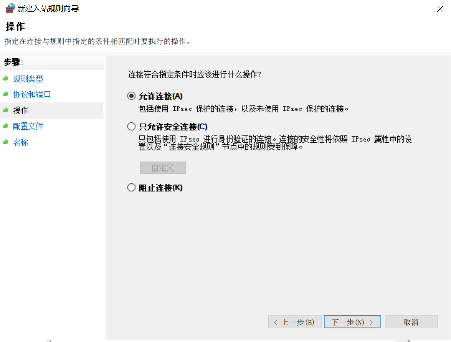
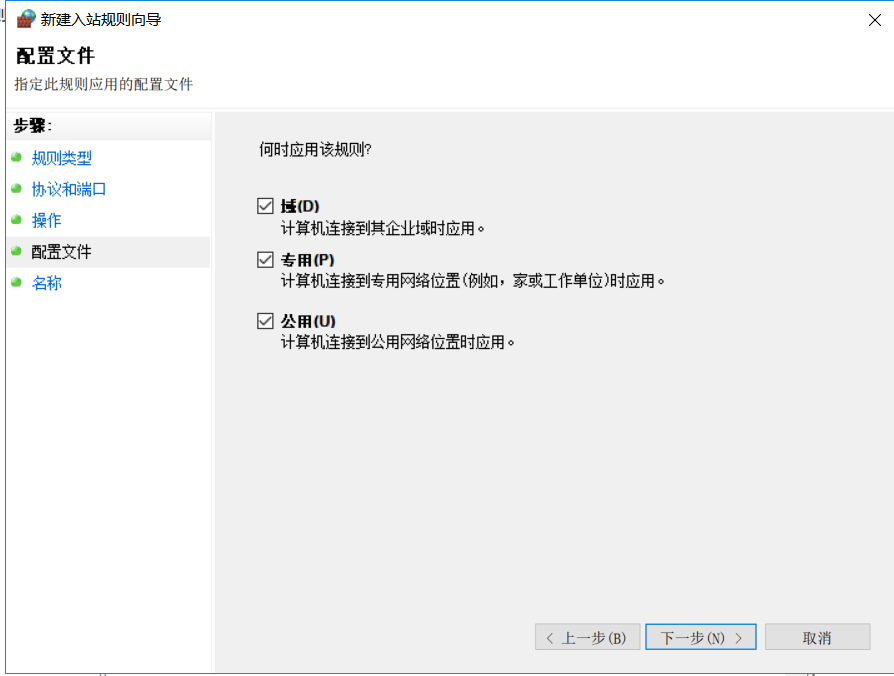
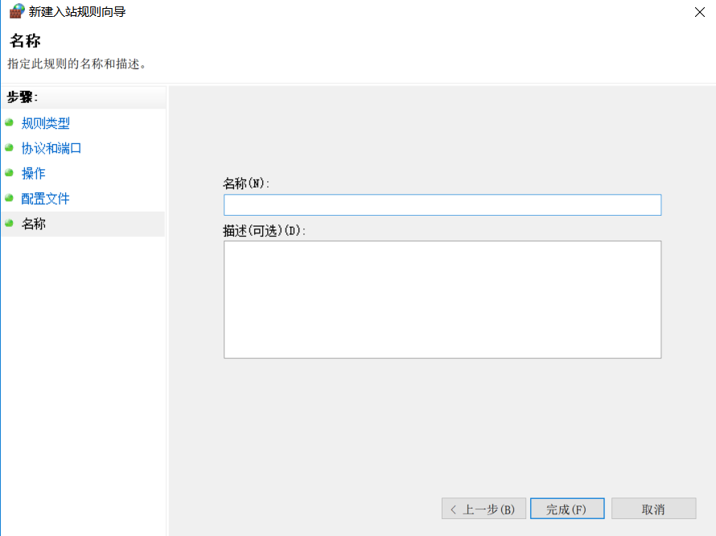
完成
这样在同一局域网下的主机便可以访问我们的网站啦